Place the butter in the basket
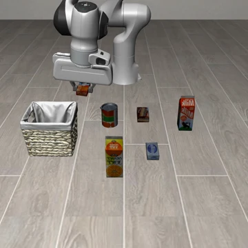
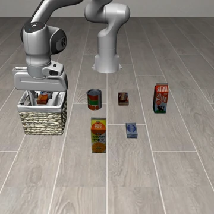
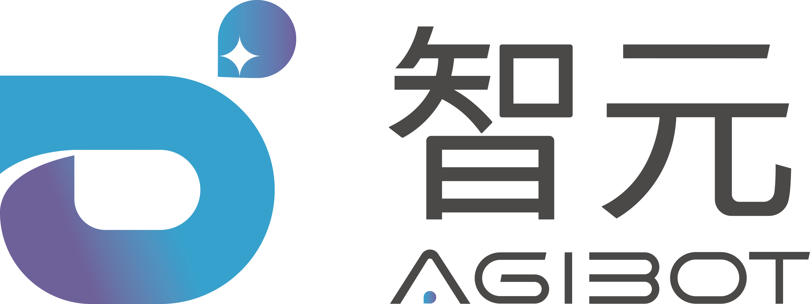
Core QuestionHow can we continually revise physical task understanding through interaction to reinterpret experience, improve agent harnesses, and transfer mechanisms across tasks?
Long-horizon embodied tasks involve physical dependencies that may only become clear through interaction. As task understanding deepens, past trials can reveal new information for adaptation and transfer. However, coarse progress feedback cannot identify which physical preconditions held, leaving search unguided, while task-specific optimization easily overfits to individual scenes, making cross-task transfer brittle. We introduce ReWeave, a framework that jointly optimizes an embodied agent harness and an emergent physical task topology from interaction without updating policy weights. Keeping execution policies and perception frozen, ReWeave co-optimizes coupled context (C), workflows (W), and control loops (L). As new evidence revises the topology, ReWeave reprojects past trials onto the updated task understanding, exposing retained progress, regressions, and bottlenecks that guide parent selection and search width. Across tasks, matching verified local mechanisms to unmet preconditions consolidates 72 specialist units into 44 reusable groups (0.34× full concatenation) within a compact shared harness capable of continual learning. ReWeave improves held-out success from 89.00% to 98.75% on LIBERO-PRO and from 25.50% to 58.25% on RoboDojo. On eight unseen LIBERO-PRO tasks, the shared harness reaches 51.3% success versus 41.3% for direct distillation, rising to 75.0% after continual learning.


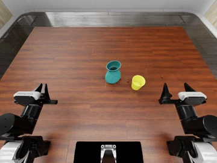
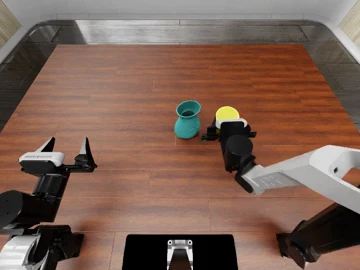
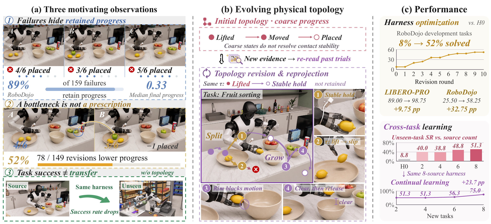
Six LIBERO-PRO tasks and 29 RoboDojo tasks reached success after an earlier failure. Scroll horizontally through each benchmark lane, switch revisions on any card, or open the harness optimization traces to follow the edits.
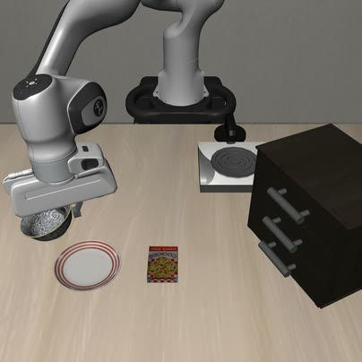
LIBERO-PRO · Spatial T08 · Seed 13 · Development
Success at H₂
Failure · 1/3 dev seeds
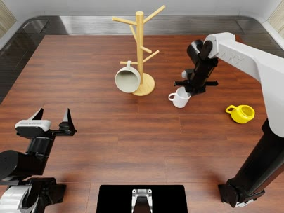
RoboDojo · Layout 1
Success at H₂
Failure
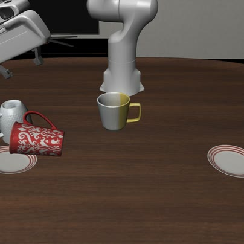
LIBERO-PRO · Long swap T04 · Seed 12 · Development
Success at H₅
Failure · 0/3 dev seeds
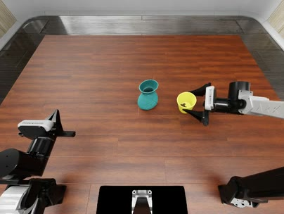
RoboDojo · Layout 1
Success at H₄
Failure · Score 0.00
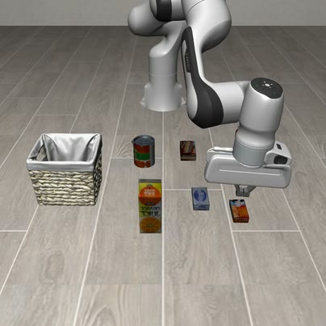
LIBERO-PRO · Object T07 · Seed 12 · Development
Success at H₂
Failure · 0/3 dev seeds
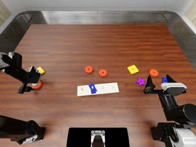
RoboDojo · Layout 1
Success at H₂
Failure · Score 0.10
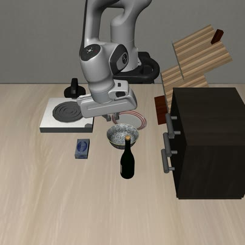
LIBERO-PRO · Goal swap T05 · Seed 13 · Development
Success at H₃
Failure · 0/3 dev seeds
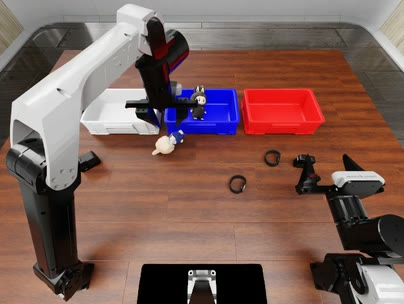
RoboDojo · Layout 1
Success at H₃
Failure · 3/6 sorted
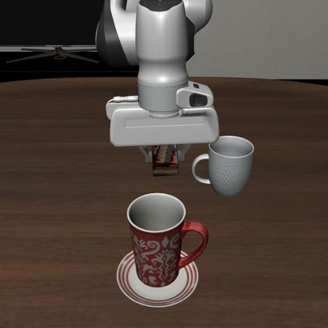
LIBERO-PRO · Long T06 · Seed 13 · Development
Success at H₃
Failure · 0/3 dev seeds
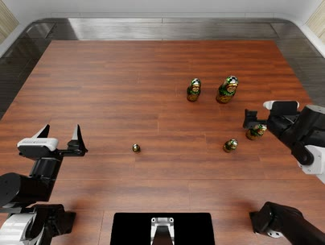
RoboDojo · Layout 1
Success at H₄
Failure · Score 0.00
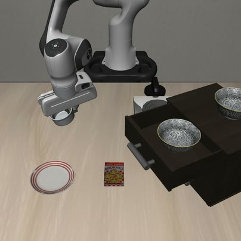
LIBERO-PRO · Spatial T04 · Seed 11 · Development
Success at H₃
Failure · 0/3 dev seeds
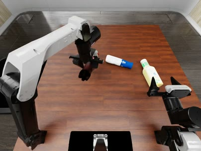
RoboDojo · Layout 1
Success at H₄
Failure · Score 0.40
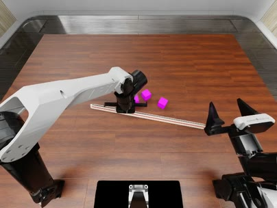
RoboDojo · Development
Success at H₂
Failure
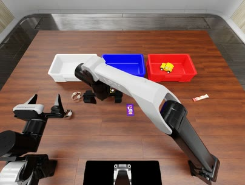
RoboDojo · Layout 1
Success at H₇
Failure
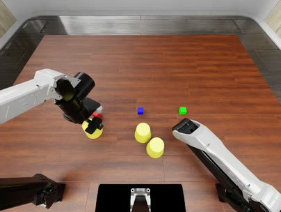
RoboDojo · Development
Success at H₁
Failure
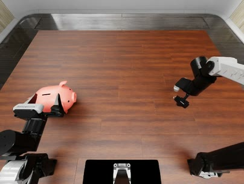
RoboDojo · Layout 1
Success at H₉
Failure
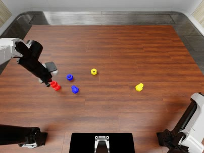
RoboDojo · Development
Success at H₁
Failure
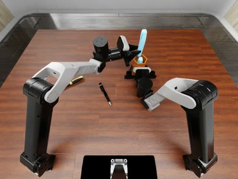
RoboDojo · Layout 1
Success at H₆
Failure
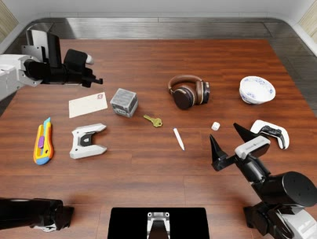
RoboDojo · Development
Success at H₁
Failure
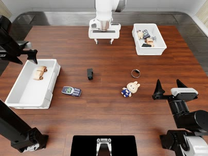
RoboDojo · Development
Success at H₁
Failure
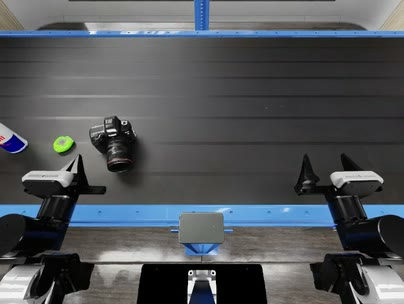
RoboDojo · Development
Success at H₁
Failure
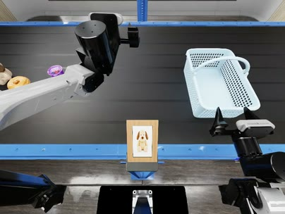
RoboDojo · Development
Success at H₃
Failure
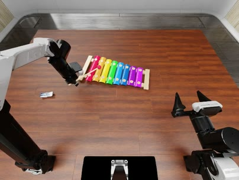
RoboDojo · Layout 1
Success at H₆
Failure
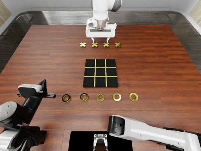
RoboDojo · Development
Success at H₄
Failure
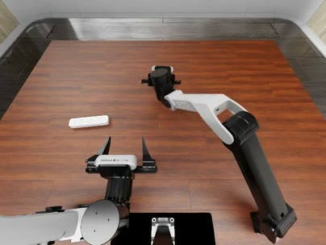
RoboDojo · Development
Success at H₃
Failure
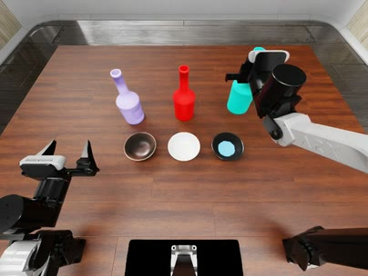
RoboDojo · Development
Success at H₂
Failure
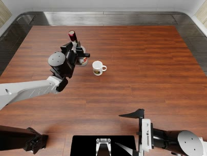
RoboDojo · Development
Success at H₅
Failure
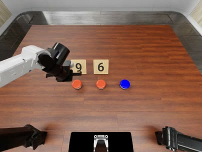
RoboDojo · Development
Success at H₁
Failure
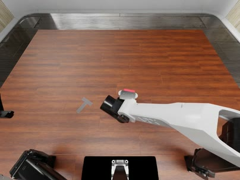
RoboDojo · Development
Success at H₂
Failure
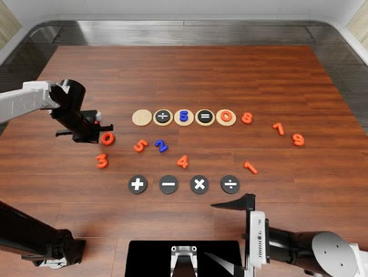
RoboDojo · Development
Success at H₁
Failure
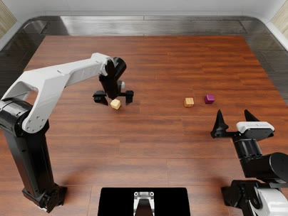
RoboDojo · Development
Success at H₂
Failure
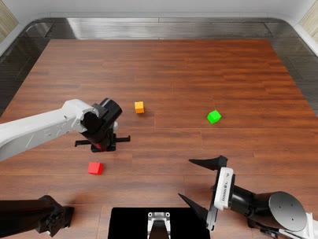
RoboDojo · Development
Success at H₄
Failure
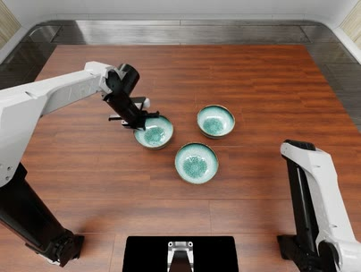
RoboDojo · Development
Success at H₁
Failure
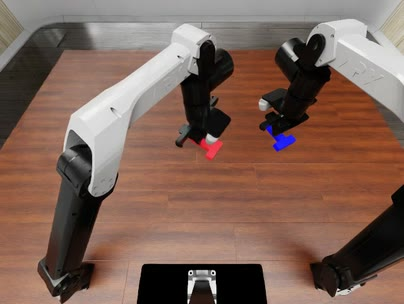
RoboDojo · Layout 1
Success at H₂
Failure
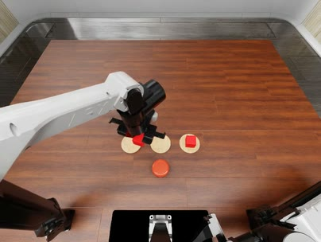
RoboDojo · Development
Success at H₁
Failure
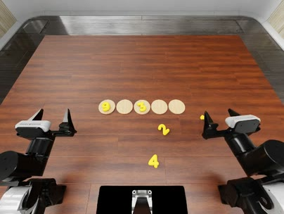
RoboDojo · Development
Success
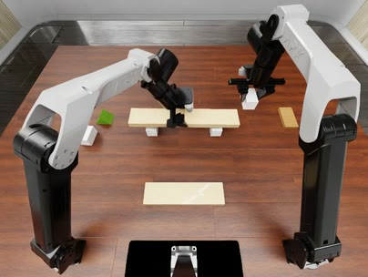
RoboDojo · Layout 1
Failure
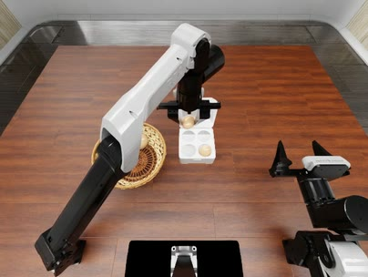
RoboDojo · Layout 1
Failure
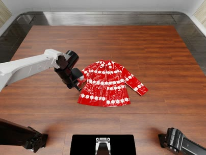
RoboDojo · Layout 1
Failure
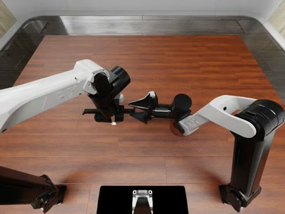
RoboDojo · Layout 1
Failure
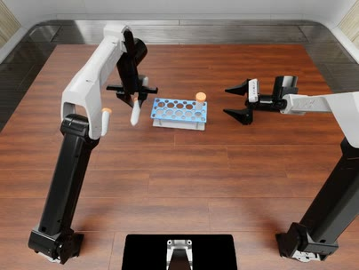
RoboDojo · Layout 1
Failure
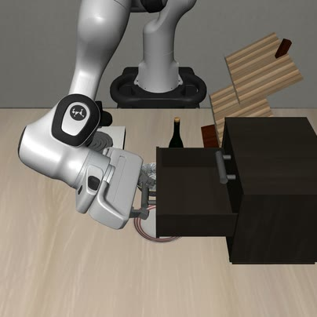
LIBERO-PRO · Goal T00 · Seed 11 · Development
Failure · 0/3 dev seeds
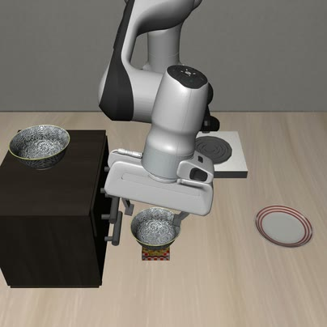
LIBERO-PRO · Spatial swap T03 · Seed 11 · Development
Failure · 0/3 dev seeds
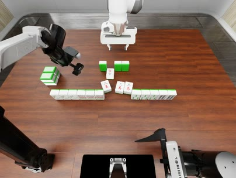
RoboDojo · Development
Success
RoboDojo · Development
Success
RoboDojo · Layout 1
Failure
RoboDojo · Layout 1
Failure
RoboDojo · Layout 1
Failure
RoboDojo · Layout 1
Failure
RoboDojo · Layout 1
Failure
LIBERO-PRO · Long swap T00 · Seed 1 · Held-out
Success
LIBERO-PRO · Long swap T01 · Seed 1 · Held-out
Success
LIBERO-PRO · Long swap T02 · Seed 1 · Held-out
Success
LIBERO-PRO · Long swap T03 · Seed 1 · Held-out
Success
LIBERO-PRO · Long swap T05 · Seed 1 · Held-out
Success
LIBERO-PRO · Long swap T06 · Seed 1 · Held-out
Success
LIBERO-PRO · Long swap T07 · Seed 1 · Held-out
Success
LIBERO-PRO · Long swap T08 · Seed 1 · Held-out
Success
LIBERO-PRO · Long swap T09 · Seed 1 · Held-out
Failure
LIBERO-PRO · Long T00 · Seed 1 · Held-out
Success
LIBERO-PRO · Long T01 · Seed 1 · Held-out
Success
LIBERO-PRO · Long T02 · Seed 1 · Held-out
Success
LIBERO-PRO · Long T03 · Seed 1 · Held-out
Failure
LIBERO-PRO · Long T04 · Seed 1 · Held-out
Success
LIBERO-PRO · Long T05 · Seed 1 · Held-out
Success
LIBERO-PRO · Long T07 · Seed 1 · Held-out
Success
LIBERO-PRO · Long T08 · Seed 1 · Held-out
Success
LIBERO-PRO · Long T09 · Seed 1 · Held-out
Success
LIBERO-PRO · Goal swap T00 · Seed 1 · Held-out
Success
LIBERO-PRO · Goal swap T01 · Seed 1 · Held-out
Success
LIBERO-PRO · Goal swap T02 · Seed 1 · Held-out
Success
LIBERO-PRO · Goal swap T03 · Seed 1 · Held-out
Success
LIBERO-PRO · Goal swap T04 · Seed 1 · Held-out
Success
LIBERO-PRO · Goal swap T06 · Seed 1 · Held-out
Success
LIBERO-PRO · Goal swap T07 · Seed 1 · Held-out
Success
LIBERO-PRO · Goal swap T08 · Seed 1 · Held-out
Success
LIBERO-PRO · Goal swap T09 · Seed 1 · Held-out
Failure
LIBERO-PRO · Goal T01 · Seed 1 · Held-out
Success
LIBERO-PRO · Goal T02 · Seed 1 · Held-out
Failure
LIBERO-PRO · Goal T03 · Seed 1 · Held-out
Success
LIBERO-PRO · Goal T04 · Seed 1 · Held-out
Success
LIBERO-PRO · Goal T05 · Seed 1 · Held-out
Failure
LIBERO-PRO · Goal T06 · Seed 1 · Held-out
Success
LIBERO-PRO · Goal T07 · Seed 1 · Held-out
Success
LIBERO-PRO · Goal T08 · Seed 1 · Held-out
Success
LIBERO-PRO · Goal T09 · Seed 1 · Held-out
Success
LIBERO-PRO · Object swap T00 · Seed 1 · Held-out
Success
LIBERO-PRO · Object swap T01 · Seed 1 · Held-out
Success
LIBERO-PRO · Object swap T02 · Seed 1 · Held-out
Success
LIBERO-PRO · Object swap T03 · Seed 1 · Held-out
Success
LIBERO-PRO · Object swap T04 · Seed 1 · Held-out
Success
LIBERO-PRO · Object swap T05 · Seed 1 · Held-out
Success
LIBERO-PRO · Object swap T06 · Seed 1 · Held-out
Success
LIBERO-PRO · Object swap T07 · Seed 1 · Held-out
Success
LIBERO-PRO · Object swap T08 · Seed 1 · Held-out
Success
LIBERO-PRO · Object swap T09 · Seed 1 · Held-out
Success
LIBERO-PRO · Object T00 · Seed 1 · Held-out
Success
LIBERO-PRO · Object T01 · Seed 1 · Held-out
Success
LIBERO-PRO · Object T02 · Seed 1 · Held-out
Success
LIBERO-PRO · Object T03 · Seed 1 · Held-out
Success
LIBERO-PRO · Object T04 · Seed 1 · Held-out
Success
LIBERO-PRO · Object T05 · Seed 1 · Held-out
Success
LIBERO-PRO · Object T06 · Seed 1 · Held-out
Success
LIBERO-PRO · Object T08 · Seed 1 · Held-out
Success
LIBERO-PRO · Object T09 · Seed 1 · Held-out
Success
LIBERO-PRO · Spatial swap T00 · Seed 1 · Held-out
Success
LIBERO-PRO · Spatial swap T01 · Seed 1 · Held-out
Success
LIBERO-PRO · Spatial swap T02 · Seed 1 · Held-out
Success
LIBERO-PRO · Spatial swap T04 · Seed 1 · Held-out
Success
LIBERO-PRO · Spatial swap T05 · Seed 1 · Held-out
Success
LIBERO-PRO · Spatial swap T06 · Seed 1 · Held-out
Success
LIBERO-PRO · Spatial swap T07 · Seed 1 · Held-out
Success
LIBERO-PRO · Spatial swap T08 · Seed 1 · Held-out
Success
LIBERO-PRO · Spatial swap T09 · Seed 1 · Held-out
Success
LIBERO-PRO · Spatial T00 · Seed 5 · Held-out
Success
LIBERO-PRO · Spatial T01 · Seed 1 · Held-out
Success
LIBERO-PRO · Spatial T02 · Seed 1 · Held-out
Success
LIBERO-PRO · Spatial T03 · Seed 1 · Held-out
Success
LIBERO-PRO · Spatial T05 · Seed 1 · Held-out
Success
LIBERO-PRO · Spatial T06 · Seed 1 · Held-out
Success
LIBERO-PRO · Spatial T07 · Seed 1 · Held-out
Success
LIBERO-PRO · Spatial T09 · Seed 1 · Held-out
Success
Choose a task and a revision to see where the robot stalled. Scroll beside the recording to inspect the code and the change in topology.
Inspect a frame
This attempt ends with both plush toys and one camera sorted.
The first camera reaches its bin. The next camera and both watches are still pending at termination.
Existing stop condition · loop_loop.py · L99–102
failed = tool_failed(result)
unmet = endpoint_unmet(call, result)
opened = stationary_open(call)
if failed or unmet or opened:After a fresh stationary close, the planner can still queue a lift in the same decision.
Inspect a frame
Repeated grasps leave the fingers empty and the last watch on the table.
Supporting the camera on the table creates a place to change hands. The last watch remains outside its bin.
Read-only pinch measurement · workflow_measure_pinch.py · L112–117
midpoint = [sum(values)/2 for values in zip(samples[0]["world_xyz"], samples[1]["world_xyz"])]
current_r = rotation(pose[3:])
target_r = rotation(target_q)
local = multiply(transpose(current_r), [c-e for c, e in zip(midpoint, pose[:3])])
goal = [p+d for p, d in zip(samples[2]["world_xyz"], args["contact_offset_xyz"])]
ee = [g-d for g, d in zip(goal, multiply(target_r, local))]The helper measures two finger points and a target from one observation, then estimates a contact pose. Possession still requires visual evidence.
Inspect a frame
A diagonal grasp retains the last watch. Both watches reach the red bin.
The revised graph separates picking up the last watch from placing it in the bin. In this round the robot completes both steps.
Loop edit · loop_loop.py · H₂ → H₃
− if failed or unmet or opened:
+ closed = stationary_closing_arm(call) is not None
+ if failed or unmet or opened or closed:A settled closure now returns control to the planner. Queued calls receive not_executed so the fingers and watch can be inspected before lifting.
Inspect an observation
H₁, step 90. The plate lifts with the closed gripper.
The two motions were queued together. The first returned observation shows the plate following the gripper.
The original reading assigns acquisition to steps 70–140. The trial ends with two of four required states retained.
The loop checks whether a Cartesian endpoint was reached. In the recorded batch, the diagnostic lift and sideways motion run before the next planning decision.
plate_H1_loop.py · L64–69
if call["name"] in ("move_to", "move_pose") and endpoint_unmet(result):
for skipped in calls[index + 1:]:
runtime.feedback(skipped["id"], {
"status": "not_executed",
"reason": "The preceding motion endpoint was not reached; replan from the actual pose before executing queued calls.",
})Inspect an observation
H₂, observation 03. An isolated lift exposes the retained rim grasp.
New instruction · H2_instructions.txt · L13–16
If ambiguous, use one short vertical clearance motion maintaining the current
grip, then check whether the object follows. Decide the lateral motion after
that feedback; do not queue an opposite-rim reposition behind this diagnostic
lift.The planner inspects the lift first, locates the stove front, then chooses the transport motion.
Official success on seed 12
The plate is still tilted at release. This result becomes evidence for revising which placement states are required.
The tilted success supplies a second route into the front region. The next graph makes supported placement near the stove optional.
Inspect an observation
H₁, step 90. The plate lifts with the closed gripper.
Front vicinity becomes optional. The failed trial now receives credit for grounding alone, leaving the front region as its next required state.
Steps 90–140 become continuation of an established hold. The recorded rollout and its failure verdict stay the same.
This checkpoint re-reads the recorded H₁ actions. The change is in the graph’s interpretation of the plate’s position.
Graph field · plate_front_vicinity
semantic-000001.json plate_front_vicinity.role = "milestone"
semantic-000002.json plate_front_vicinity.role = "branch"Inspect a frame
The episode ends before the basket goal.
A language-guided pickup selects another package. A lower regrasp secures the butter, but the remaining carry ends before basket placement.
A lower regrasp secures the butter. The run ends before it reaches the basket.
loop.py · H0
if tool_failed(result):
for skipped in calls[index + 1:]:
runtime.feedback(skipped["id"], {
"status": "not_executed",
"reason": "A preceding tool failed or was interrupted; replan from its actual feedback before executing queued calls.",
})
objective = "A tool failed while the episode remains active. Reassess its actual feedback and choose a justified recovery; do not finish merely because the tool failed. Tracking residuals alone are not tool failures."Inspect a frame
The package has been re-localized. Basket placement is still incomplete.
The revised loop cancels queued calls after a missed Cartesian endpoint. Two development seeds succeed. In seed 12, the butter lands outside and the planner has to locate it again.
The revised graph adds an initial calibrated grasp and recovery edges for re-localizing and regrasping an exterior package.
loop.py · H1
if unmet_endpoint(call, result):
reject_pending(runtime, calls[index + 1:], "The preceding Cartesian motion did not reach its endpoint; queued calls require a new decision from the attained pose.")Inspect a frame
The final control step reaches the basket goal.
The next context revision uses the offset between the held package and the basket interior to choose the end-effector target. All three development seeds now reach the basket goal.
The final graph retains the carry-and-deposit edge. The butter reaches the basket at control step 261.
context.instructions · H2
desired_eef_xy = actual_eef_xy + (interior_xy - held_package_xy).Inspect a frame
Both arms have returned with seven pieces retained.
Two early rectangle descents disturb the grasp. A staged regrasp eventually captures the shaft. The robot retains seven pieces and returns both arms home.
An early changed hold leads through offboard staging and a fresh pickup. The final state credits two rectangles, three disks and two squares.
context.instructions · H0
verify lift, carry the held bore over its assigned receiver, lower with the hold
preserved, inspect actual engagement, release, and verify retention after theInspect a frame
Both arms are home. Two placements remain.
The context now asks for an axial descent with a fixed orientation and receiver position. Eight pieces stay in place. A disk and a rectangle remain loose at the return.
The new trajectory adds an observed axial rectangle capture and a return state with a star among eight retained pieces.
context.instructions · H1
insertion, select move_pose with linear=true, unchanged quaternion/receiver XYInspect a frame
The evaluator records success at the return.
The context adds an inventory and route forecast at handoffs. This run reaches the previously unseen third rectangle and fourth disk, installs the final star, and completes the return.
This round completes the full inventory and satisfies the task goal. Earlier runs returned with seven or eight pieces.
context.instructions · H2
Subtract a grounded allowance for final disengagement and both-arm return, then
divide each remaining budget by unresolved placements. Include failed fits,
retries, surveys and handoff travel in the forecast. Unknown home costs stayWhen the run crosses a budget checkpoint, the builder passes the inventory and return-budget review to the next planner call.
context.py · L236–239
state = dict(context.get("state", {}))
checkpoint = budget_checkpoint(context, state)
if checkpoint:
messages = messages + [{"kind": "request", "parts": [{"part_kind": "user-prompt", "content": checkpoint}]}]Inspect a frame
Failure · 1/3 dev seeds
The robot localizes the black bowl beside the ramekin. The fingers make contact late in the episode and the bowl never moves with the gripper.
The baseline loop executes the planner’s queued calls and checks for termination after each call.
loop/loop.py · Python · L40–43
for index, call in enumerate(calls):
result = runtime.execute(call)
if runtime.snapshot()["terminal"]:
return {"summary": "Environment ended"}The initial graph separates metric localization from a secured grasp. This episode reaches only localization.
Inspect a frame
Failure · 2/3 dev seeds
The correct bowl rises and travels with the gripper. The recording ends before it reaches the plate.
After a pick or a missed Cartesian endpoint, the loop interrupts the queued continuation so the planner can inspect the achieved hold.
loop/loop.py · Python · L80–87
checkpoint = None
if call["name"] == "pi0_pick":
checkpoint = PICK_CHECK
elif call["name"] in ("move_to", "move_pose") and endpoint_unreached(result):
checkpoint = ENDPOINT_CHECK
if checkpoint:
for skipped in calls[index + 1:]:
runtime.feedback(skipped["id"], {New edges distinguish atomic rim capture, prepositioned picking and low-clearance carrying. The bowl stays in the gripper after the lift.
Inspect a frame
Success · 2/3 dev seeds
The gripper secures the target, brings it over the plate and reaches the official goal at control step 189.
The context allows a direct rim pinch on the first attempt and specifies where the two contact pads should meet the rim.
context/instructions · Planner guidance · L14–18
Choose the acquisition method before spending the grasp budget. An exposed rim
can support a direct atomic pinch as the FIRST attempt when its geometry, jaw
orientation and approach clearance are grounded. This route does not require a
failed VLA pick. Select a free rim segment away from the landmark and neighbors;
position the open jaws with one contact pad inside and one outside the wall.A new edge represents closing on an already contacted rim. The bowl aligns with the plate and the placement satisfies the task goal.
Inspect a frame
Failure · 2/3 dev seeds
The bowl is released and visibly supported by the plate at the last step. The evaluator still returns failure. The footage leaves the exact gap unresolved.
The loop adds separate reviews after closing and testing retention. The context distinguishes a small diagnostic lift from the later clearance lift.
loop/loop.py · Python · L192–196
elif closing:
checkpoint = CLOSURE_CHECK
elif testing:
retention_pending = False
checkpoint = RETENTION_CHECKA new placed state captures visible support independently of the official goal. This unsuccessful episode ends in that state.
Inspect a frame
Success · 3/3 dev seeds
The bowl is secured by step 85, aligned by 147 and officially placed at 172. All three development seeds succeed in this round.
A read-only workflow fits the held and supporting rims and computes their horizontal offset. A lateral move also opens a placement review.
workflows/rim_alignment/rim_alignment.py · Python · L150
delta = [fits['support']['center_world_xyz'][i]-fits['held']['center_world_xyz'][i] for i in range(2)]The final projection follows the secured and aligned states to the official goal. The preceding round retains its separate placed-state result.
Inspect a frame
Failure · 0/3 dev seeds
The robot holds each mug in turn. At the end it has identified both targets, but neither required support relation is verified.
The baseline runs the planner’s batch and checks each call for termination or explicit failure.
loop/loop.py · Python · L40–44
for index, call in enumerate(calls):
result = runtime.execute(call)
if runtime.snapshot()["terminal"]:
return {"summary": "Environment ended"}
if tool_failed(result):The first graph gives each color its own held, delivered and supported states. The route loses possession after each transfer.
Inspect a frame
Failure · 1/3 dev seeds
The yellow mug remains supported on the right after withdrawal. Correcting the white mug fails to establish lasting support on the left.
The loop sends control back to the planner after a pick, a gripper change or release, keeping those observations available before another action.
loop/loop.py · Python · L91–96
elif call["name"] == "pi0_pick":
objective = PICK_BOUNDARY
elif call["name"] == "set_gripper":
objective = GRIPPER_BOUNDARY
elif call["name"] == "release":
objective = RELEASE_BOUNDARYThe graph adds partial combinations for support of one mug alongside delivery of the other. Yellow support survives the failed white correction.
Inspect a frame
Failure · 1/3 dev seeds
Both mugs arrive in their designated plate areas. Opening, settling and a recovery attempt leave both required support tests false.
A new measurement workflow estimates lateral correction from separate fitted centers for the mug and the plate.
workflows/placement_geometry/placement_geometry.py · Python · L135–137
body = output["body"]["center_world"]
support = output["support"]["center_world"]
delta = [support[i]-body[i] for i in (0, 1)]Two local-correction edges extend the existing graph. This run remains at both-delivered through its final recovery.
Inspect a frame
Failure · 1/3 dev seeds
In this branch, both mugs reach their designated areas, but the episode again ends at delivery.
Starting from H₁, the workflow estimates the exterior base along the fitted mug axis and aligns that base with the support.
workflows/measure_placement/placement_measure.py · Python · L142–146
base = [c[i] + axial * n[i] for i in range(3)]
delta = [support[i] - base[i] for i in (0, 1)]
output.update(base_estimate_available=True, base_center_world=base, base_axis_length_m=-axial,
base_edge_radius_m=math.sqrt(sum((edge[i] - base[i]) ** 2 for i in range(3))),
delta_xy=delta, candidate_eef_xy=[anchor[i] + delta[i] for i in (0, 1)],The topology is unchanged. Both mugs reach their plates, but they do not both stay supported.
Inspect a frame
Failure · 2/3 dev seeds
The white mug remains supported on the left through the second transfer. The yellow mug reaches its plate area, but the right-side support test stays false.
Another H₁ branch allows a short local placement attempt near the support. The loop checks the proposed horizon before running it.
loop/loop.py · Python · L78–84
if call["name"] == "pi0_doubled":
chunks = call.get("arguments", {}).get("max_chunks")
if type(chunks) is not int or not 1 <= chunks <= 3:
# Never replace a proposed action with shortened arguments.
reject_suffix(runtime, calls[index:], CONTACT_HORIZON)
objective = CONTACT_HORIZON
breakThe graph adds retry edges after an empty white pickup or an insecure yellow pickup. The final state preserves white support across both deliveries.
Inspect a frame
Success · 3/3 dev seeds
The white mug stays on the left while the yellow mug reaches the right. Eight release steps complete the task at control step 389.
The context now chooses the pickup for the later set-down. It favors an accessible handle when that keeps the rim clear and the mug upright.
context/instructions · Planner guidance · L23–27
grasp. Choose the grasp for the later placement as well as for lifting: when a
mug's handle is visible and accessible, prefer a handle-specific grasp-only prompt
that leaves the rim clear and the body upright. Do not request a rim pinch merely
because the rim is visible from above. A body or rim grasp remains useful when
it gives stable control; the handle is a conditional option, not a prerequisite.This run reaches the existing goal node. Both mugs rest on their assigned plates at the same time.
Inspect a frame
Failure · Layout 1
Three mugs remain on the rack and both arms return near home. Two cups appear sideways. The official result is failure; the record does not establish a unique cause.
The inherited context asks for a three-dimensional check of the peg passing through the handle before release.
context/instructions · Planner guidance · L21
Treat capture as a three-dimensional relation.The baseline graph gives the physical all-hung-and-returned state its own node. The evaluator still marks this run incomplete.
Inspect a frame
Failure · Layout 1
The pale mug stays on the rack. The white mug ends on the table with the yellow one; the empty right arm returns home.
The context asks the planner to choose the entire placement cycle before pickup, including the held attitude and the retreat from the peg.
context/instructions · Planner guidance · L3
Before acquisition, choose a complete placement cycle: a reachable peg, a rim/body grasp leaving the handle free, a carrying attitude, an insertion along the peg, and a jaw retreat clear of the rack and earlier hangs.New edges describe setting down, regrasping and recovering retention. The second hold regresses to the one-hung state.
Inspect a frame
Success · Layout 1
The second hang persists, the third mug is released, and the evaluator accepts the return at frame 785.
This revision branches from H₀. A failed segmentation now adds a temporary handle-identity review to the next decision.
context/identity_review.py · Python · L26–34
value = part.get("content")
if isinstance(value, str):
try:
value = json.loads(value)
except ValueError:
continue
if isinstance(value, dict) and value.get("found") is False:
return "\n\n" + IDENTITY_REVIEW
return ""The final graph records the third placement and withdrawal, then credits official completion at the return boundary.
Inspect a frame
Failure · Layout 1
The robot returns the released cup upright and brings both arms near home. The balls do not all reach the vase.
The inherited workflow calculates a target cup pose and lower rim position from the upright reference and the proposed rotation.
workflows/upright_rim_target/upright_rim.py · Python · L185–189
if reason is None:
xyz = sub(center,rotate(delta,sub(source,a["reference_ee_pose"][:3])))
q = unit(multiply(delta,ee_q))
body_min = center[2]-source_radius*math.sqrt(max(0,1-normal[2]**2))-max(0,a["cup_depth_m"]*normal[2])
out.update({"target_pose": xyz+q, "target_mouth_center_xyz": center,The graph credits the upright cup and both returns together. The run ends before all the balls land in the vase.
Inspect a frame
Failure · Layout 1
The right arm returns. The left arm still holds the empty, tilted cup, and subsequent left-arm calls execute no actions.
The context adds path selection before carrying a loaded cup and gives a criterion for choosing a linear move.
context/instructions · Planner guidance · L5
For a retained upright load, prefer move_pose with linear=true where the intended translation is compatible with the native link6 +X linear-motion criterion.The graph adds per-arm return states. The terminal state records right-arm return with the source still held.
Inspect a frame
Failure · Layout 1
The released cup is upright and the arms reach their near-home states. The recorded delivery is still incomplete.
A separate branch from H₀ measures the gap between both fingers at the achieved wrist orientation before closing.
context/instructions · Planner guidance · L13
Use both fingers to locate the open jaw gap and its contact depth at the current observation; one fingertip surface and a nominal forward distance do not establish a pinch center.The graph adds a staged delivery edge and a retreat that restores the loaded reference. This run still ends at upright cup and returned arms.
Inspect a frame
Failure · Layout 1
The robot restores both arms, but the cup is tilted, balls remain inside it, and at least one ball lies outside.
The rim workflow computes the signed gravity component along the cup axis. Its output explicitly leaves complete emptying unverified.
workflows/upright_rim_target/upright_rim.py · Python · L144–148
return {"basis": "modeled_target_only", "relation": relation,
"inclination_from_upright_rad": math.acos(nz),
"axial_gravity_toward_mouth_m_s2": -9.81*nz,
"mouth_above_base_center_m": depth*nz,
"complete_emptying": "unverified", "implication": implication,The graph adds paths for staged discharge and for handling the canted cup. This rollout reaches the arms-home state with containment unfinished.
Inspect a frame
Success · Layout 1
The source cup is empty and upright when the evaluator accepts the episode. The right arm is still away from its initial joints at termination.
The loop rejects back-projection calls queued after a physical move. The next decision selects pixels from the newly settled view.
loop/loop.py · Python · L56–60
if scene_changed and call["name"] == "back_project":
for skipped in calls[index:]:
runtime.feedback(skipped["id"], dict(PIXEL_FEEDBACK))
objective = PIXEL_OBJECTIVE
breakThe graph adds a terminal-registration edge during the set-down approach. The evaluator marks the placement successful. The footage ends before the arms complete their return.
Follow a cabinet-top bowl from a missing pickup condition to a shared grasp workflow, then see which parts carry over to a new task.
H₁ identified the cabinet-top bowl. The next edge required a retained grasp and separation from its support. Two specialist edges had recorded those effects.
initial_rim_pickThe bowl is identified on the cabinet top. Surface samples locate its rim and the supporting surface.
grounded → removedGrasp and lift · frames 10–101
metric_initial_pickThe gripper is empty. Samples locate the bottle surface and the basket opening; the bottle rests on the table.
basket_localized → bbq_pickedGrasp and lift · frames 10–82
Match the roles of object, hand and support. In both tasks, the gripper holds the object after it leaves its original support. The bowl supplies rim geometry; the bottle supplies open-hand access conditions. The target scene still has to establish clearance.
One retrieved unit covered the requested effects for 94% of gap queries. Coverage measures the match between effects and missing conditions; rollout success is evaluated separately.
The context changes the first grasp choice. The workflow gives the planner a fresh view with the fingers open, so it can inspect the wall before committing to closure.
use a grounded rim pinch
prefer a grounded rim pinch on the FIRST attempt, especially among similar objects.
The context asks for rim and support measurements. The workflow consumes the local grasp position, inserts with open jaws, and returns for inspection in the seat phase. A later grasp call closes and probes the hold.
Both ReWeave runs use the same grasp workflow selected during source development. Each pair starts from the same simulator state. Open either film to step through the contact at 1024 × 1024.
Spatial P03 · seed 4
The open jaws reach the measured rim on the first seat. After inspecting the seat, the gripper closes and probes the hold. The rollout ends with the bowl on the plate.
seat @ 0 → grasp @ 5(0.067, −0.022, 0.945)Direct. Two pick attempts leave the bowl at its source.
Spatial T08 · seed 1
The first seat hits the horizontal travel bound. A waypoint brings the hand closer. The same workflow then seats and closes; later corrections complete placement.
seat @ 0 → waypoint → seat @ 2 → grasp @ 6(−0.1675, 0.357, 0.927)Direct. An early pickup lifts the bowl and ramekin together. Later attempts fail to confirm a stable grasp of the bowl.
Each stage inherits the previous shared harness and queries the bank built so far. When a new task demonstrates a transition, its unit becomes available to the next pair. Selection checks performance on earlier tasks alongside the new ones.
The white mug must reach the left plate. A query retrieves carry_to_opening from an earlier bottle-to-basket task. Its object and receiver roles map to the white mug and its plate.
delivered_near(white, plate1)on_relation(white, plate1)P03 · T08+2 tasks · selected R0P03 · T07+4 tasks · selected R0P05 · T00+6 tasks · selected R1P04 · T06+8 tasks · selected R4The bank starts at 72 units. The first two stages retain the inherited harness at round zero. After eight additions the shared harness reaches 75.0%; training from scratch on the same target panel reaches 53.8%.
Binary outcomes hide which physical milestones a trial reached. Revised topologies expose contact stability, clearance, and assembly constraints.
Context, workflows, and control loops act together. A grasp hint can only help if the workflow reads it and checks the grasp before moving.
A specialist can solve its own scene yet miss a prerequisite in a new one. Local mechanisms can transfer when their prerequisites match.
Task topology and the agent harness evolve together as physical evidence accumulates.
Each revision updates \Phi_t = (\mathcal V_t,\mathcal E_t,\mathcal P_t). Edges bind physical preconditions to execution evidence and implementing code.
Progress across earlier trials guides the choice of parent harness, the number of new trials and the next edit.
Verified transitions such as pre-grasp alignment and surface stabilization can recur across different tasks.
Evaluated on LIBERO-PRO (80 tasks) and RoboDojo (42 tasks) with strict development/held-out seed separation and frozen policies.
| Method | Spatial | Object | Goal | Long | 6-Suite | 8-Suite |
|---|---|---|---|---|---|---|
| End-to-End Policies | ||||||
| π0.5 | 20.0 / 1.0 | 17.0 / 1.0 | 38.0 / 2.0 | 8.0 / 1.0 | 13.2 | 11.0 |
| πRLinf | 59.0 / 42.0 | 78.0 / 71.0 | 42.0 / 45.0 | 14.0 / 49.0 | 56.2 | 50.0 |
| AtomVLA | 16.0 / 1.0 | 10.0 / 0.0 | 2.0 / 11.0 | 1.0 / 9.0 | 6.7 | 6.3 |
| X-VLA | 0.0 / 0.0 | 2.0 / 8.0 | 1.0 / 9.0 | 0.0 / 10.0 | 3.3 | 3.8 |
| Embodied Agents | ||||||
| OpenRUA | 98.0 / 100.0 | 98.0 / 97.0 | 79.0 / 79.0 | 80.0 / 65.0 | 91.8 | 87.0 |
| RPent | 98.0 / 100.0 | 99.0 / 100.0 | 99.0 / 88.0 | 72.0 / 85.0 | 97.33 | 92.63 |
| ASPIRE | 98.6 / 97.6 | 99.0 / 99.4 | 97.0 / 96.8 | 84.6 / 95.0 | 98.07 | 96.00 |
| ReWeave H0 | 93.0 / 100.0 | 100.0 / 99.0 | 97.0 / 90.0 | 72.0 / 61.0 | 96.50 | 89.00 |
| ReWeave (Ours) | 99.0 / 100.0 | 100.0 / 100.0 | 100.0 / 98.0 | 96.0 / 97.0 | 99.50 | 98.75 |
| Δ vs. H0 | +6.0 / 0.0 | 0.0 / +1.0 | +3.0 / +8.0 | +24.0 / +36.0 | +3.00 | +9.75 |
| Method | Std. | Random | Precision | Long | Memory | Open | Avg. |
|---|---|---|---|---|---|---|---|
| End-to-End Policies | |||||||
| π0.5 | 20.93 / 14.89 | 5.82 / 1.44 | 12.40 / 5.50 | 23.54 / 14.67 | 5.89 / 4.67 | 1.98 / 1.67 | 11.44 / 6.93 |
| Awomo-0.5 | 37.70 / 30.89 | 22.92 / 16.78 | 39.65 / 33.50 | 40.36 / 26.75 | 42.27 / 41.22 | 24.09 / 22.92 | 35.34 / 29.64 |
| VPP2 | 52.14 / 46.44 | 20.63 / 12.56 | 43.03 / 35.17 | 56.28 / 37.00 | 56.01 / 55.56 | 4.61 / 4.08 | 39.26 / 32.26 |
| Self-Optimizing Agents | |||||||
| PhysicalRSI | 31.57 / 25.67 | 11.04 / 5.56 | 38.05 / 32.50 | 46.37 / 37.33 | 46.74 / 46.56 | 28.88 / 24.92 | 36.27 / 31.38 |
| EmbodiedEvo | 34.55 / 30.33 | 35.88 / 31.33 | 25.15 / 16.25 | 33.83 / 21.75 | 79.40 / 76.67 | 51.81 / 49.25 | 45.08 / 38.95 |
| WorldScape-R2SI | 46.62 / 40.33 | 39.28 / 31.33 | 23.51 / 15.50 | 51.48 / 34.25 | 65.78 / 63.67 | 49.16 / 47.50 | 46.58 / 39.35 |
| HexaShell-Preview | 43.28 / 38.00 | 35.15 / 31.00 | 41.25 / 32.00 | 42.91 / 31.50 | 84.53 / 81.00 | 57.97 / 55.25 | 53.18 / 46.85 |
| ReWeave H0 | 26.08 / 21.67 | 20.25 / 15.00 | 19.94 / 15.00 | 27.81 / 6.25 | 60.00 / 56.67 | 34.13 / 31.25 | 33.01 / 25.50 |
| ReWeave (Ours) | 45.50 / 41.67 | 47.08 / 41.67 | 48.56 / 42.50 | 54.63 / 42.50 | 93.33 / 93.33 | 74.31 / 71.25 | 63.43 / 58.25 |
| Δ vs. H0 | +19.42 / +20.00 | +26.83 / +26.67 | +28.63 / +27.50 | +26.81 / +36.25 | +33.33 / +36.67 | +40.19 / +40.00 | +30.42 / +32.75 |
| Setting | Source SR | Spatial | Object | Goal | Long | Target Avg. |
|---|---|---|---|---|---|---|
| A. Shared Distillation (Source Scaling) | ||||||
| H0 | — | 0.0% | 35.0% | 0.0% | 0.0% | 8.8% |
| Ours2 | 95.0% | 95.0% | 45.0% | 15.0% | 5.0% | 40.0% |
| Ours4 | 80.0% | 70.0% | 70.0% | 0.0% | 15.0% | 38.8% |
| Ours6 | 95.0% | 90.0% | 100.0% | 5.0% | 0.0% | 48.8% |
| w/o topology8 (Direct) | 88.8% | 60.0% | 95.0% | 0.0% | 10.0% | 41.3% |
| Ours8 (Topology-Guided) | 86.3% | 95.0% | 95.0% | 10.0% | 5.0% | 51.3% (+10.0) |
| B. Continual Learning (2 New Tasks / Stage) | ||||||
| Ours+2 / Ours+4 | 100.0% / 97.2% | 95.0% | 95.0% | 10.0% | 5.0% | 51.3% |
| Ours+6 | 88.1% | 95.0% | 100.0% | 10.0% | 20.0% | 56.3% |
| From Scratch8 | 87.5% | 55.0% | 85.0% | 15.0% | 60.0% | 53.8% |
| Ours+8 (Continual) | 93.8% | 90.0% | 90.0% | 20.0% | 100.0% | 75.0% (+21.2) |
With eight sources, 72 specialist units form 44 groups. A single retrieved unit covers 94% of gap queries.
Continual learning expands the bank from 72 to 118 units. Target-stage offline tokens are 106.20M, compared with 131.82M from scratch.
| Variant | Held-out SR | Dev SR | Rounds | Trials |
|---|---|---|---|---|
| A. Coupled Solution Space | ||||
| H0 | 3.75% | 4.17% | — | — |
| C only | 47.50% | 66.67% | 3.6 | 10.9 |
| C + W | 52.50% | 79.17% | 3.5 | 10.8 |
| C + W + L (Full) | 55.00% | 75.00% | 3.8 | 11.4 |
| B. Topology & Reprojection | ||||
| w/o topology | 46.25% | 62.50% | 3.9 | 11.6 |
| w/ fixed topology | 41.25% | 75.00% | 3.6 | 11.3 |
| w/o reprojection | 47.50% | 62.50% | 4.4 | 13.6 |
| ReWeave (Full) | 55.00% | 75.00% | 3.8 | 11.4 |
| C. Search Width Configuration | ||||
| Serial K = 1 | 55.00% | 75.00% | 3.8 | 11.4 |
| Fixed K = 2 | 52.50% | 91.67% | 3.0 | 18.1 |
| Fixed K = 3 | 56.25% | 83.33% | 3.1 | 28.1 |
| Dynamic κ = 30 | 55.00% | 83.33% | 2.9 | 16.9 |
| Online Execution LM | Offline Optimization LM | Held-out SR |
|---|---|---|
| A. Varying Online LM (Frozen Harnesses) | ||
| GPT-6.1 Terra (high) | GPT-6.1 Sol (xhigh) | 55.00% |
| Claude Sonnet 5.5 (high) | GPT-6.1 Sol (xhigh) | 57.50% |
| DeepSeek V4.1 Flash (high) | GPT-6.1 Sol (xhigh) | 30.00% |
| B. Varying Offline Optimizer (Fixed Terra Online) | ||
| GPT-6.1 Terra (high) | GPT-6.1 Sol (xhigh) | 55.00% |
| GPT-6.1 Terra (high) | Claude Sonnet 5.5 (xhigh) | 92.50% (+37.50) |
| GPT-6.1 Terra (high) | DeepSeek V4.1 Flash (xhigh) | 65.00% |
Stronger offline reasoning (Sonnet vs. Sol) boosts online Terra execution by +37.50 points without retraining policy weights or changing the online executor.
@article{xu2026reweave,
title = {ReWeave: Emergent Physical Task Topologies for Embodied Harness Optimization and Cross-Task Meta-Distillation},
author = {Xu, Yicheng and Jiang, Wencan and Zhu, Zihao and Zhou, Keru and Zhou, Chang and Liu, Li and Yao, Maoqing and Liu, Yong and Zhang, Jiangning},
journal = {arXiv preprint},
year = {2026}
}